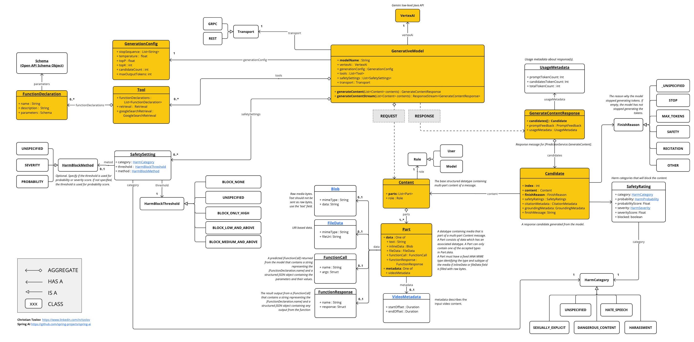

VertexAI Gemini 聊天 #
[ Vertex AI Gemini API]( https://cloud.google.com/vertex-ai/docs/generative-ai/multimodal/overview) 允许开发人员使用 Gemini 模型构建生成式 AI 应用程序。[ Vertex AI Gemini API]( https://cloud.google.com/vertex-ai/docs/generative-ai/multimodal/overview) 支持将多模态提示作为输入和输出文本或代码。多模态模型是一种能够处理来自多种模态的信息（包括图像、视频和文本）的模型。例如，您可以向模型发送一盘饼干的照片，并要求它为您提供这些饼干的配方。 Gemini 是由 Google DeepMind 开发的一系列生成式 AI 模型，专为多模式用例而设计。Gemini API 允许您访问 [ Gemini 2.0 Flash]( https://cloud.google.com/vertex-ai/generative-ai/docs/models/gemini/2-0-flash) 和 [ Gemini 2.0 Flash]( https://cloud.google.com/vertex-ai/generative-ai/docs/models/gemini/2-0-flash)-Lite。有关 Vertex AI Gemini API 模型的规格，请参阅[ 模型信息]( https://cloud.google.com/vertex-ai/generative-ai/docs/models#gemini-models) 。 Gemini API 参考
先决条件 #
- 安装适合您作系统的 gcloud CLI。
- 通过运行以下命令进行身份验证。将 PROJECT_ID 替换为您的 Google Cloud 项目 ID，将 ACCOUNT 替换为您的 Google Cloud 用户名。
gcloud config set project <PROJECT_ID> &&
gcloud auth application-default login <ACCOUNT>
自动配置 #
Spring AI 为 VertexAI Gemini Chat 客户端提供 Spring Boot 自动配置。要启用它，请将以下依赖项添加到项目的 Maven pom.xml 或 Gradle build.gradle 构建文件中：
聊天属性 #
前缀 spring.ai.vertex.ai.gemini 用作属性前缀，可让您连接到 VertexAI。
前缀 spring.ai.vertex.ai.gemini.chat 是属性前缀，允许您为 VertexAI Gemini Chat 配置聊天模型实施。
运行时选项 #
[
VertexAiGeminiChatOptions.java](
https://github.com/spring-projects/spring-ai/blob/main/models/spring-ai-vertex-ai-gemini/src/main/java/org/springframework/ai/vertexai/gemini/[VertexAiGeminiChatOptions.java](https://github.com/spring-projects/spring-ai/blob/main/models/spring-ai-vertex-ai-gemini/src/main/java/org/springframework/ai/vertexai/gemini/VertexAiGeminiChatOptions.java)) 提供模型配置，例如温度、topK 等。
启动时，可以使用 VertexAiGeminiChatModel(api, options) constructor 或 spring.ai.vertex.ai.chat.options.* properties 配置默认选项。
在运行时，您可以通过向 Prompt 调用添加新的、特定于请求的选项来覆盖默认选项。例如，要覆盖特定请求的默认温度：
ChatResponse response = chatModel.call(
new Prompt(
"Generate the names of 5 famous pirates.",
VertexAiGeminiChatOptions.builder()
.temperature(0.4)
.build()
));
工具调用 #
Vertex AI Gemini 模型支持工具调用（在 Google Gemini 上下文中称为函数调用 ）功能，允许模型在对话期间使用工具。以下是如何定义和使用基于 @Tool 的工具的示例：
public class WeatherService {
@Tool(description = "Get the weather in location")
public String weatherByLocation(@ToolParam(description= "City or state name") String location) {
...
}
}
String response = ChatClient.create(this.chatModel)
.prompt("What's the weather like in Boston?")
.tools(new WeatherService())
.call()
.content();
您也可以将 java.util.function bean 用作工具：
@Bean
@Description("Get the weather in location. Return temperature in 36°F or 36°C format.")
public Function<Request, Response> weatherFunction() {
return new MockWeatherService();
}
String response = ChatClient.create(this.chatModel)
.prompt("What's the weather like in Boston?")
.tools("weatherFunction")
.inputType(Request.class)
.call()
.content();
在[ 工具](../tools.html)文档中查找更多信息。
模 态 #
多模态是指模型同时理解和处理来自各种（输入）源的信息的能力，包括文本 、pdf、 图像 、 音频和其他数据格式。
图像、音频、视频 #
Google 的 Gemini AI 模型通过理解和集成文本、代码、音频、图像和视频来支持此功能。有关更多详细信息，请参阅博客文章 [
Gemini 简介](
https://blog.google/technology/ai/google-gemini-ai/#introducing-gemini) 。
Spring AI 的 Message 接口通过引入 Media 类型来支持多模态 AI 模型。此类型包含有关消息中媒体附件的数据和信息，使用 Spring org.springframework.util.MimeType 和 java.lang.Object 作为原始媒体数据。
下面是一个从 [
VertexAiGeminiChatModelIT#multiModalityTest（）](
https://github.com/spring-projects/spring-ai/blob/main/models/spring-ai-vertex-ai-gemini/src/test/java/org/springframework/ai/vertexai/gemini/VertexAiGeminiChatModelIT.java) 中提取的简单代码示例，演示了用户文本与图像的组合。
byte[] data = new ClassPathResource("/vertex-test.png").getContentAsByteArray();
var userMessage = new UserMessage("Explain what do you see on this picture?",
List.of(new Media(MimeTypeUtils.IMAGE_PNG, this.data)));
ChatResponse response = chatModel.call(new Prompt(List.of(this.userMessage)));
PDF 格式 #
最新的 Vertex Gemini 提供对 PDF 输入类型的支持..使用 application/pdf 媒体类型将 PDF 文件附加到消息中：
var pdfData = new ClassPathResource("/spring-ai-reference-overview.pdf");
var userMessage = new UserMessage(
"You are a very professional document summarization specialist. Please summarize the given document.",
List.of(new Media(new MimeType("application", "pdf"), pdfData)));
var response = this.chatModel.call(new Prompt(List.of(userMessage)));
样品控制器 #
[
创建一个新](
https://start.spring.io/)的 Spring Boot 项目，并将 添加到您的 spring-ai-starter-model-vertex-ai-gemini pom（或 gradle）依赖项中。
在 src/main/resources 目录下添加一个 application.properties 文件，以启用和配置 VertexAi 聊天模型：
spring.ai.vertex.ai.gemini.project-id=PROJECT_ID
spring.ai.vertex.ai.gemini.location=LOCATION
spring.ai.vertex.ai.gemini.chat.options.model=gemini-2.0-flash
spring.ai.vertex.ai.gemini.chat.options.temperature=0.5
这将创建一个 VertexAiGeminiChatModel 实现，您可以将其注入到您的类中。下面是一个简单的 @Controller 类示例，该类使用 chat 模型生成文本。
@RestController
public class ChatController {
private final VertexAiGeminiChatModel chatModel;
@Autowired
public ChatController(VertexAiGeminiChatModel chatModel) {
this.chatModel = chatModel;
}
@GetMapping("/ai/generate")
public Map generate(@RequestParam(value = "message", defaultValue = "Tell me a joke") String message) {
return Map.of("generation", this.chatModel.call(message));
}
@GetMapping("/ai/generateStream")
public Flux<ChatResponse> generateStream(@RequestParam(value = "message", defaultValue = "Tell me a joke") String message) {
Prompt prompt = new Prompt(new UserMessage(message));
return this.chatModel.stream(prompt);
}
}
手动配置 #
VertexAiGeminiChatModel 实现了 ChatModel，并使用 VertexAI 连接了 Vertex AI Gemini 服务。
将 spring-ai-vertex-ai-gemini 依赖项添加到项目的 Maven pom.xml 文件中：
<dependency>
<groupId>org.springframework.ai</groupId>
<artifactId>spring-ai-vertex-ai-gemini</artifactId>
</dependency>
或您的 Gradle build.gradle 构建文件。
dependencies {
implementation 'org.springframework.ai:spring-ai-vertex-ai-gemini'
}
接下来，创建一个 VertexAiGeminiChatModel 并将其用于文本生成：
VertexAI vertexApi = new VertexAI(projectId, location);
var chatModel = new VertexAiGeminiChatModel(this.vertexApi,
VertexAiGeminiChatOptions.builder()
.model(ChatModel.GEMINI_2_0_FLASH)
.temperature(0.4)
.build());
ChatResponse response = this.chatModel.call(
new Prompt("Generate the names of 5 famous pirates."));
VertexAiGeminiChatOptions 提供聊天请求的配置信息。这是 VertexAiGeminiChatOptions.Builder fluent 选项构建器。
低级 Java 客户端 #
以下类图说明了 Vertex AI Gemini 原生 Java API： 